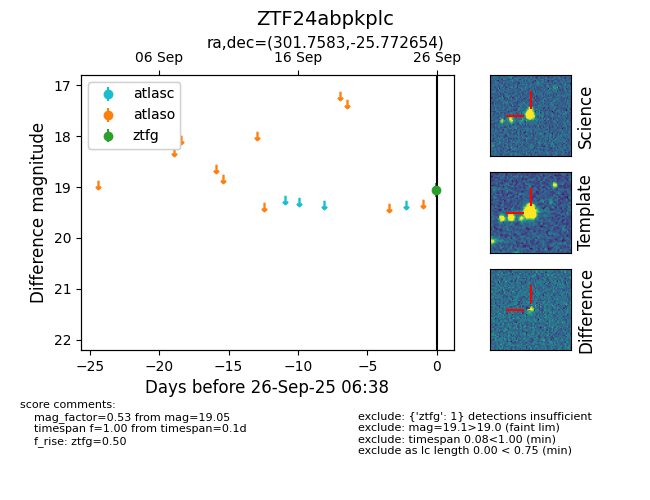

FINK: ZTF24abpkplc
Lasair: ZTF24abpkplc
ALeRCE: ZTF24abpkplc
ZTF24abpkplc (ztf,fink)
equatorial (ra, dec) = (301.7583,-25.77265)
galactic (l, b) = (16.3331,-27.24861)

last ztfg=19.05
1 ztfg detections